DaYan GuHong
{kind=link}
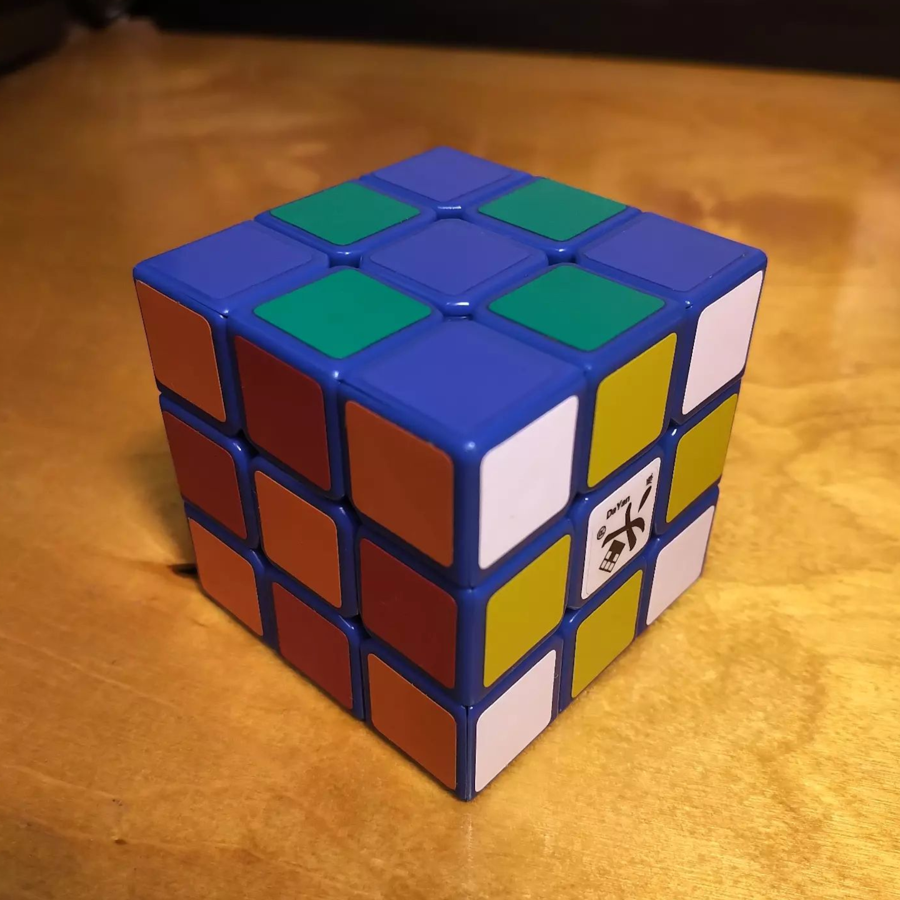
2 (2010)
DaYan Guhong. We've finally reached one of the endpoints of my cube collection, as it is usually described as one of the very first "speedcubes"--a puzzle cube whose design prioritizes speed of turning.
I'm surprised to see that it is still being sold, and are relatively inexpensive. For the collection I decided to get a version with blue plastic; this is my callback to those days when cubes came in many more colors than black, white, or primary. The turning feel is smooth, but basic; while turning, the pieces feel hollow inside and the diagonal seams on the corners and edges produce a tactile bumpiness when turning. There is some corner-cutting ability, but considerably less than on more modern cubes, owing to the very minimal rounding on tthe inside corners of the pieces.
The sticker shades are not bright, but they're serviceable and the mustard yellow on here looks a little better than the almost sickly yellow on my stickerless Zhanchi. They also stand out very nicely against the blue plastic... except, of course, for the blue (they're really the same shade!).
Tension adjustment is done via screw, but I'm generally happy with the tension, as the turning is very smooth while the popping is rare (it only happened once so far). It might also benefit from getting treated with a thick lube that can deaden the bumpiness, but I will try that later. (The cube seems to have been factory-lubricated, which I discovered when I took a picture of the piece interface inside.)
I'm surprised at how good this cube feels, given how different it feels from the cubes from 2020 onwards. It's fun to see the evolution of traits as different designers and manufacturers tried to figure out what would make a good speedcube. Also not bad as a landmark in terms of cube features. I'm glad I was able to get one (two, actually!) in 2023. (I also got a black plastic one to turn more often.)
Original post: https://www.instagram.com/p/Cx5oNM7PHl9
Specifications
| Make | DaYan |
|---|---|
| Model | GuHong |
| Edition/Variant | |
| Model no. | 2 |
| Release year | 2010 |
| Magnets (edge-corner) | ❌ |
|---|---|
| Magnets (core) | ❌ |
| Magnets (maglev) | ❌ |
| Stickerless | ❌ |
| Internals | Split-piece design; blue |
|---|---|
| Externals | Stickered |
| Adjustment | Philips screw - axis distance |
| Remarks | Earliest "speedcube" in my collection |
Photos
{kind=link}
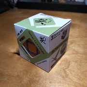
Cube box
{kind=link}
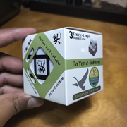
Box side (with model number)
{kind=link}
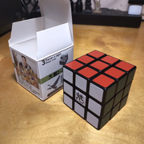
Cube (white, red, green side)
{kind=link}
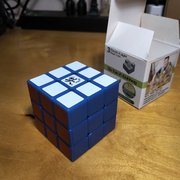
Blue stickers on blue plastic
{kind=link}
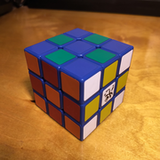
Cube (checkerboard state)
{kind=link}
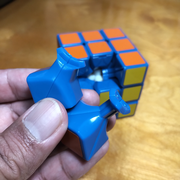
Piece design (edge and corner)
{kind=link}
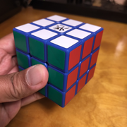
Cube (in hand)
{kind=link}
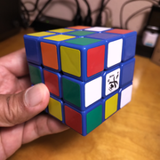
Cube (scrambled state)
{kind=link}
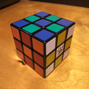
Cube (black plastic)
{kind=link}
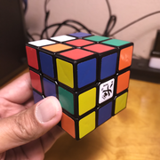
Cube (black plastic, scrambled)
Collections
This cube is part of the following collections: